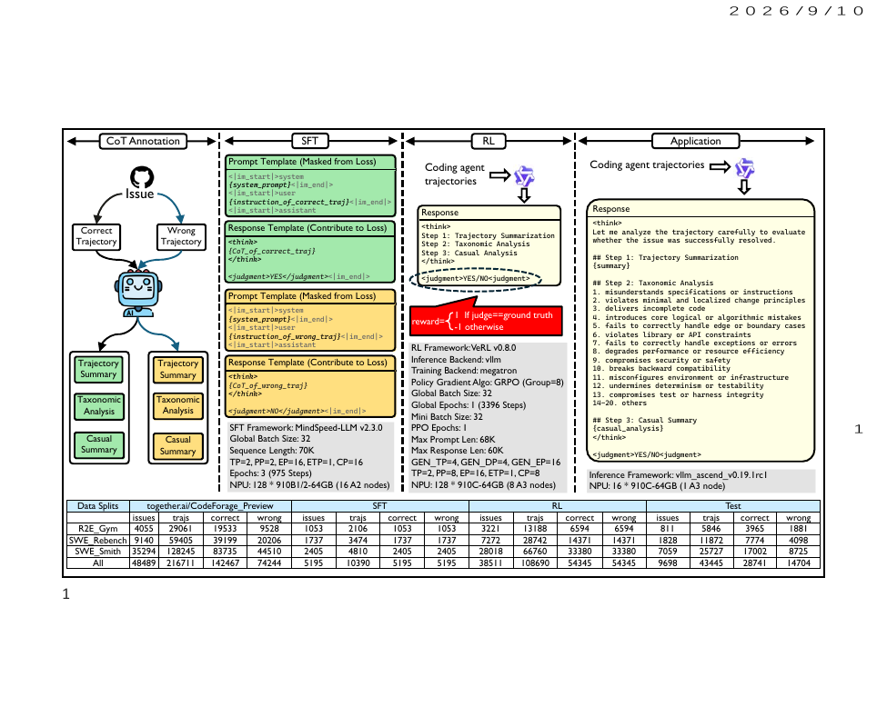
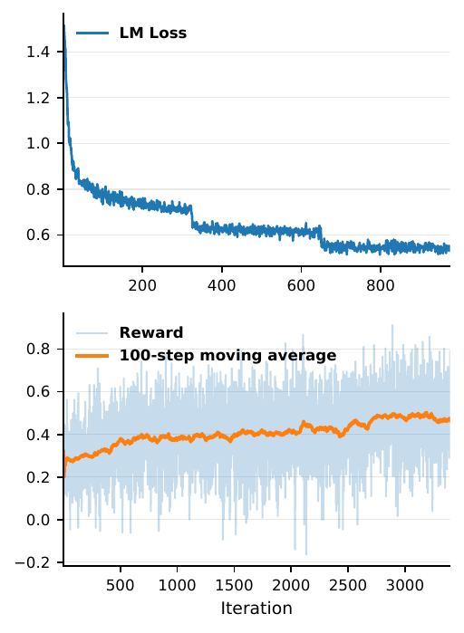

Pipeline SFT→GRPO qui entraîne Qwen3-30B-A3B-Thinking à répondre YES/NO à « cette trajectoire OpenHands a-t-elle résolu l'issue ? », avec pour vérité terrain le verdict de la suite de tests cachée de CoderForge-Preview — exogène et exacte, jamais un juge LLM — et un gain annoncé de 57 → 78 % d'accuracy sur 43 445 trajectoires held-out.
Claim principal, formulé précisément : sur des trajectoires ≤ 64K tokens, produites par un seul générateur (Qwen3-Coder-480B) dans un seul scaffold (OpenHands v0.52.1), issues des mêmes 1 655 dépôts que l'entraînement et séparées uniquement au niveau de l'issue, le post-training fait passer l'accuracy de classification binaire de 56,6 % à 78,1 %. ⚠️ Le baseline constant « toujours YES » vaut 66,2 % sur ce même test set et n'est jamais calculé par les auteurs : le gain réel du pipeline est de +11,9 pt sur un classifieur trivial, dont 0,3 pt pour le SFT et 11,6 pt pour le RL — et il est négatif (−5,4 pt) sur un des trois sous-ensembles.
Origine. Rien n'est collecté : tout vient de CoderForge-Preview (Together AI, fév. 2026), 258 134 trajectoires test-verified (155 144 pass / 102 990 fail), 51 201 issues, 1 655 dépôts [§II-A ; README Tab. 1]. Générateur unique : Qwen3-Coder-480B sous OpenHands v0.52.1 (version précisée seulement dans le README), sur trois sources de tâches fournissant des gyms exécutables : R2E-Gym, SWE-Rebench, SWE-Smith.
Caractéristiques par source [README Tab. 1, absent du PDF] :
| Source | Issues | Dépôts | Trajs | Pass | Médiane (tok) | Moyenne | P99 |
|---|---|---|---|---|---|---|---|
| R2E-Gym | 4 216 | 9 | 32 964 | 20 904 | 39 599 | 42 149 | 83 549 |
| SWE-Rebench | 9 764 | 1 577 | 77 169 | 44 739 | 41 996 | 45 236 | 99 391 |
| SWE-Smith | 37 221 | 124 | 148 001 | 89 501 | 36 008 | 39 313 | 88 101 |
| Total | 51 201 | 1 655 | 258 134 | 155 144 | 38 052 | 41 398 | 91 150 |
Filtrage — et c'est ici que papier et dépôt divergent. Le papier écrit : « discarding any trajectory that exceeds 64K tokens or does not contain a submitted patch (e.g., the task is incomplete) » [§II-A]. Le README donne trois règles réelles :
1. reward == -1 dans CoderForge (« has no clear meaning ») ;
2. len(input_ids) > 65 536 ;
3. incomplétude jugée par Qwen3.5-27B sur le dernier message assistant (exam_openhands_finish_message_prompt_template.txt).
⚠️ La règle 3 est un juge LLM non déclaré dans le papier, et il filtre le test set aussi. Conséquence de conception, pas seulement de forme : les négatifs « l'agent a abandonné » sont retirés, donc le vérifieur n'est jamais évalué sur le mode d'échec le plus fréquent en production, et les négatifs restants sont exactement la classe dure « l'agent déclare avoir réussi, les tests disent non ». Cela rend la tâche plus dure (bon) et l'évaluation moins représentative (mauvais) — aucun des deux effets n'est discuté.
Volumes après filtrage [Fig. 1 « Data Splits », p. 2] : 216 711 trajectoires conservées sur 258 134 ⇒ 16,05 % filtrés (le « 16 % » du §II-A est confirmé), 48 489 issues (2 712 issues perdues entièrement).
| Split | Issues | Trajs | Correct | Wrong | % positif |
|---|---|---|---|---|---|
| Pool filtré | 48 489 | 216 711 | 142 467 | 74 244 | 65,7 % |
| SFT | 5 195 | 10 390 | 5 195 | 5 195 | 50 % |
| RL | 38 511 | 108 690 | 54 345 | 54 345 | 50 % |
| Test | 9 698 | 43 445 | 28 741 | 14 704 | 66,2 % |
Recoupements arithmétiques : 10 390 + 108 690 = 119 080 ⇒ SFT = 8,73 % (« 8,7 % » ✓), RL = 91,27 % (« 91,3 % » ✓), train = 119K (« 119K » de l'intro ✓). 54 186 trajectoires (25 % du pool) ne sont utilisées nulle part — ce sont les positifs excédentaires jetés pour équilibrer le RL set ; le papier ne le mentionne pas.
Séparation train/test — le point faible. Le split est par issue (20 % des issues, toutes leurs trajectoires au test) [§II-A pt 1]. Il n'est pas par dépôt. Avec 9 dépôts pour R2E-Gym et 124 pour SWE-Smith (≈ 300 issues/dépôt), la totalité des dépôts de test est vue à l'entraînement. Pour un vérifieur, la fuite directe (l'issue et son patch) est bien bloquée, mais les priors spécifiques au dépôt — style de tests, conventions, bugs typiques — sont intégralement disponibles. Non discuté.
Déséquilibre train↔test non traité : RL entraîné à 50/50, évalué à 66/34. C'est la cause mécanique de l'asymétrie FP/FN de §3, et les auteurs ne l'identifient pas (ils renvoient l'étude des ratios 2:1, 1:2, 4:1 au Future Work pt 1).
Données SFT avant RL. 10 390 trajectoires (1 succès + 1 échec par issue, 5 195 paires), annotées par GPT-5.5 en analyse différentielle par paires : le teacher voit les deux trajectoires de la même issue et produit issue_specification, deux trajectory_summary, differential_reasoning, deux taxonomic_analysis, deux causal_analysis [README ; pairwise_evaluate_coding_agent_trajectories.txt, 19 KB]. Les sections sont ensuite réécrites par le même teacher (rename_trajectory.txt) pour effacer toute référence explicite (« Traj 1 », « the first trajectory ») ou implicite (« also », « whereas ») à l'autre trajectoire, afin d'obtenir un CoT pointwise. ⚠️ Ingrédient réellement intéressant et jamais ablaté : le CoT est produit en régime pairwise (où les LLM jugent mieux) puis converti en pointwise. Aucune mesure du taux de fuite résiduelle de la comparaison après réécriture.
Taxonomie de fautes (13 catégories + « 14–20 others »), imposée au CoT [Fig. 1 « Application », p. 2] : 1. misunderstands specifications or instructions · 2. violates minimal and localized change principles · 3. delivers incomplete code · 4. introduces core logical or algorithmic mistakes · 5. fails to correctly handle edge or boundary cases · 6. violates library or API constraints · 7. fails to correctly handle exceptions or errors · 8. breaks backward compatibility · 9. compromises security or safety · 10. degrades performance or resource efficiency · 11. misconfigures environment or infrastructure · 12. undermines determinism or testability · 13. compromises test or harness integrity.
Curriculum : aucun. Une epoch de RL, ordre non trié, pas de filtrage par difficulté, pas de pass@k.
Coût humain : zéro heure humaine déclarée, et c'est cohérent — labels = tests, CoT = GPT-5.5, filtre = Qwen3.5-27B. Aucune relecture humaine d'aucun label, d'aucun CoT, d'aucun verdict. C'est la force (coût nul) et la limite (aucun canal de vérité humain, donc aucun plafond de bruit mesurable) du dispositif.
⚠️ Il n'y a pas d'environnement. Les trajectoires sont un dataset statique de transcriptions ; rien n'est exécuté, rien n'est reset, aucun outil n'est appelé pendant l'entraînement ni pendant l'éval. L'« environnement » du RL est un dataset parquet et une fonction de reward de 7 lignes. Toutes les entrées « harness » ci-dessous décrivent le harness des trajectoires jugées, pas celui du vérifieur.
Observation du vérifieur : la transcription OpenHands brute, blocs <|im_start|>system|user|assistant interleavés, injectée telle quelle dans {traj} [sft_instruction_template.txt, 14,3 KB]. Le prompt décrit au vérifieur les 4 outils du scaffold jugé : execute_bash, str_replace_editor, think, finish.
Espace d'actions du vérifieur : un token de sortie utile. Le prompt impose <think>\n …Steps 1-3… \n</think>\n\n<judgment>YES</judgment> ou NO, « The final visible answer MUST contain ONLY one of the following ». Pas d'outil, pas de tour, pas de recherche dans le dépôt, pas de ré-exécution : le vérifieur ne peut rien vérifier, il ne peut que lire.
Garde-fou anti-raccourci, recopié [sft_instruction_template.txt] : « Note that OpenHands operates without access to the ground-truth tests during the problem-solving process. Therefore, even if the agent uses existing repository tests or self-generated tests in a trajectory to verify its solution, such validation is not based on the ground-truth tests and is thus NOT reliable evidence of correctness. » ⚠️ C'est exactement le raccourci que la tâche invite (« l'agent a lancé pytest, c'est vert ⇒ YES ») et le seul rempart est une phrase dans un prompt. Jamais ablaté, jamais attaqué.
Horizon / contexte long. Single-turn pour le vérifieur ; la longueur est entièrement dans le prompt. max_prompt_length = 1024×68 = 69 632, max_response_length = 1024×60 = 61 440, data.truncation='error' [run_qwen3-30b-a3b_128k_grpo_megatron_vllm_npu.sh]. Aucune troncature, aucun résumé, aucune compaction : les trajectoires trop longues sont exclues en amont (règle 2), pas gérées. La trajectoire n'est donc jamais transformée en arbre ⇒ le ratio d'importance de GRPO reste valide de ce côté. ⚠️ Mais le prix est payé en couverture : médiane réelle 38 052 tokens, P99 91 150, et la motivation de l'intro (LoLBench, « 53–532 turns », « millions of tokens on average ») décrit un régime que ce système ne peut structurellement pas ingérer.
Exécution, déterminisme, reset, timeouts : inapplicables côté vérifieur. ⚠️ Une panne silencieuse est documentée — dans le README seulement [README l. 295] : « The version of vLLM (0.18.0) included in the VeRL image used in our experiments does not yet support Router Replay. This may lead to inconsistencies between MoE training and inference, as the expert routing decisions made during rollout cannot be guaranteed to be reproduced during training. » C'est précisément la case infra de la grille (« les tokens entraînés sont-ils ceux qui ont été émis ? ») : les tokens le sont, le routage d'experts ne l'est pas, donc les log-probs réentraînés ne sont pas ceux du rollout sur un MoE. Aveu honnête, sans aucune mesure de l'ampleur (ni KL rollout↔train, ni écart de log-prob) et absent du papier.
Sorties mal formées : traitées par le reward, pas par le harness — voir §3. À l'éval, l'extraction échoue sur une part non nulle des réponses du modèle de base, comptée comme erreur au dénominateur.
Exemple de trajectoire : non fourni dans le papier (ni extrait, ni cas qualitatif — Future Work pt 5 l'avoue). Les templates du dépôt permettent de le reconstruire.
Deux objets à ne pas confondre : (i) le reward du run RL, qui est exact et exogène ; (ii) le vérifieur produit, qui est le livrable et n'est utilisé comme reward nulle part.
(i) Reward du run — exact, binaire, outcome pur [Éq. 3, §II-D] :
r = +1siy_ans = YES ∧ x_traj passes tests·+1siy_ans = NO ∧ x_traj fails tests·-1sinon.
Implémentation réelle [scripts/rl/reward.py, recopié intégralement] :
def compute_score(data_source, solution_str, ground_truth, extra_info=None):
solution_str = solution_str.strip()
if solution_str.endswith("</think>\n\n<judgment>YES</judgment>") and ground_truth == '1':
return 1.0
if solution_str.endswith("</think>\n\n<judgment>NO</judgment>") and ground_truth == '0':
return 1.0
return -1.0
Trois lectures que le papier ne fait pas. (a) La condition est un endswith exact : le format est fusionné dans le reward de justesse, un bon verdict mal formaté vaut -1 comme un verdict faux. (b) Il n'y a donc pas de clause d'échec ni d'agrégation — binaire pur, aucune pondération, aucun crédit partiel, aucun terme de longueur. (c) ground_truth vient directement du champ reward de CoderForge, soit le verdict de la suite de tests cachée ; le test_dataset HF le confirme : « ground_truth: "1" if the trajectory passed unit testing, and "0" otherwise ».
Granularité : outcome, pas process. ⚠️ Les auteurs se rangent eux-mêmes dans la case Process de leur Tab. I et concluent « a process-level generalist verifier ». C'est inexact au sens du reward : seule l'entrée est le process, la cible est le résultat final. Le Future Work pt 2 le reconnaît (« incorporating signals not only from the final test results but also from the intermediate reasoning process »). Sur l'axe procédure↔résultat qui sépare deux juges frontier par ailleurs stables, ce vérifieur a appris le résultat, en lisant la procédure comme indice.
Fiabilité mesurée — FP et FN séparés. Le papier publie accuracy, precision/recall/F1 par classe avec tous les dénominateurs [Tab. II], ce qui est au-dessus de la moyenne du corpus, mais ne calcule jamais la matrice de confusion ni les taux. Reconstruction exacte à partir de ses propres numérateurs (FP = pred+ − TP, FN = pred− − TN, FPR = FP/N, FNR = FN/P) :
| Sous-ens. | Modèle | acc | TP | FP | TN | FN | FPR | FNR | non extraits |
|---|---|---|---|---|---|---|---|---|---|
| All (P=28 741 · N=14 704) | base | 0,566 | 24 536 | 12 555 | 51 | 17 | 85,4 % | 0,1 % | 6 286 (14,5 %) |
| SFT | 0,657 | 19 340 | 5 523 | 9 181 | 9 401 | 37,6 % | 32,7 % | 0 | |
| RL | 0,781 | 24 499 | 5 278 | 9 426 | 4 242 | 35,9 % | 14,8 % | 0 | |
| R2E-Gym (P=3 965 · N=1 881) | base | 0,598 | 3 483 | 1 645 | 12 | 3 | 87,5 % | 0,1 % | 703 (12,0 %) |
| SFT | 0,518 | 1 817 | 671 | 1 210 | 2 148 | 35,7 % | 54,2 % | 0 | |
| RL | 0,624 | 2 671 | 906 | 975 | 1 294 | 48,2 % | 32,6 % | 0 | |
| SWE-Rebench (P=7 774 · N=4 098) | RL | 0,784 | 6 158 | 948 | 3 150 | 1 616 | 23,1 % | 20,8 % | 0 |
| SWE-Smith (P=17 002 · N=8 725) | RL | 0,815 | 15 670 | 3 424 | 5 301 | 1 332 | 39,2 % | 7,8 % | 0 |
Les quatre faits que cette reconstruction établit :
2610.15778 (FPR 0,161 pour le meilleur juge, qui dérive quand même) : SWE-Critix démarre au-delà du plateau dégradé de plusieurs cellules de cette étude.Plafond de bruit : absent, et non mesurable ici. Pas d'accord inter-annotateurs (zéro humain), pas d'accord inter-juges (un seul modèle évalué), pas de reproductibilité du juge (« we evaluate each model on each sample only once », §III). ⚠️ Et il existe un bruit dans la vérité terrain que personne ne borne : un label « pass » de CoderForge signifie « la suite cachée passe », ce qui inclut les lucky pass — c'est littéralement le sujet d'un papier cité dans leur propre Tab. I (AgentLens, « revealing lucky pass »). Une partie irréductible des « faux positifs » de SWE-Critix peut être des vrais positifs mal étiquetés, et une partie de son accuracy peut être l'apprentissage des biais de la suite de tests. Non discuté.
Robustesse : le vérifieur n'a jamais été attaqué. Pas de solution dégénérée, pas de mutant, pas de livrable tronqué, pas de test de délétion appariée, pas de sonde adversariale. Et ne pouvait pas l'être par une politique, puisque aucune politique ne s'optimise contre lui (§4).
Juge LLM dans la chaîne : deux, tous deux hors du reward — GPT-5.5 (CoT du SFT) et Qwen3.5-27B (filtre d'incomplétude, non déclaré dans le papier). Prompts du premier publiés et de taille substantielle (19,3 KB) ; aucune validation d'aucun des deux.
Algorithme : GRPO standard [Shao et al.], groupe 8, initialisé depuis π_SFT, objectif Éq. 2 = espérance de reward − β·KL(π_θ‖π_SFT). Rien de non standard. Ce qui est particulier, c'est l'objet entraîné : la politique optimisée est le vérifieur, et son reward est un oracle exact et statique.
Hyperparamètres — le papier en donne 4 ; les lanceurs du dépôt donnent le reste (vérifié le 2026-10-20) :
| Valeur | Source | |
|---|---|---|
| Algo / advantage | GRPO, adv_estimator=grpo |
§II-D + script |
| Taille de groupe | 8 (n_resp_per_prompt=8) |
§II-D + script |
| KL | use_kl_in_reward=False, kl_coef=0.0, use_kl_loss=True, kl_loss_coef=0.001, kl_loss_type=low_var_kl |
script uniquement (le β de l'Éq. 2 n'est jamais chiffré dans le papier) |
| LR / schedule | 1e-6, warmup ratio 0,01, weight_decay=0.1, clip_grad=1.0 |
script |
| Batch | train_batch_size=32 prompts, ppo_mini_batch_size=32, ppo_micro_batch_size_per_gpu=1, ppo_epochs=1, use_dynamic_bsz=True |
script + Fig. 1 |
| Entropie | entropy_coeff=0 |
script |
| Longueurs | prompt ≤ 69 632, réponse ≤ 61 440, truncation='error' |
script |
| Échantillonnage | temperature=1.0, top_p=1.0 |
script |
| Steps | 1 epoch = 3 396 itérations (32 × 3 396 = 108 672 ≈ 108 690 du RL set) | §II-D + Fig. 1 |
| Clipping PPO | non précisé (défauts VeRL non surchargés dans le lanceur) | — |
| Parallélisme RL | TP=2, PP=8, EP=16, ETP=1, CP=8 ; rollout GEN_TP=4, GEN_EP=4 | Fig. 1 + script |
| SFT | MindSpeed-LLM v2.3.0, GBS 32, seq 70K, TP=2 PP=2 EP=16 ETP=1 CP=16, 3 epochs = 975 iters, lr=1.25e-5 cosine → min-lr 1.25e-7 |
Fig. 1 + sft_*.sh |
| Seeds | 1 (aucune mention de graine, aucune répétition) | — |
| Éval | vLLM-Ascend v0.19.1rc1, 1 tirage par échantillon ; température d'éval non précisée | §III + Fig. 1 |
Stabilité : rien n'a cassé, et rien n'a été instrumenté. trainer.val_before_train=False et trainer.test_freq=-1 dans le lanceur : aucune évaluation n'est faite pendant le run RL, pas une seule fois sur 3 396 steps. Il n'existe donc aucune courbe de FPR/FNR par checkpoint, et la question « le vérifieur se dégrade-t-il pendant l'entraînement » n'a pas de réponse possible à partir de ce run. Aucun incident rapporté — crédible vu la simplicité (un seul reward binaire, pas d'outil, pas de sandbox), à l'exception notable de la non-reproductibilité du routage MoE (§2), qui est précisément le genre de défaut sans signature dans la courbe de reward.
Compute. SFT : 128 NPU Ascend 910B1/B2-64GB (16 nœuds A2), ~15 h ⇒ ≈ 1 920 NPU-h. RL : 128 NPU Ascend 910C-64GB (8 nœuds A3 × 16), ~533 h ⇒ ≈ 68 224 NPU-h, soit ≈ 20,1 NPU-h par itération et ~9,4 min/step pour 32 prompts × 8 rollouts. Éval : 16 NPU 910C, 1 nœud.
Dynamique [Fig. 2]. Reward (moyenne mobile 100 steps) : ≈ 0,28 au départ → ≈ 0,47 à 3 396, encore croissante à l'arrêt. Comme r ∈ {−1,+1}, l'accuracy équilibrée vaut (r+1)/2 : 64,0 % → 73,5 % sur données 50/50. Recoupement que le papier ne fait pas : l'accuracy équilibrée de test vaut (TPR+TNR)/2 = 64,9 % pour le SFT et 74,7 % pour le RL — soit un écart train↔test quasi nul, voire légèrement favorable au test. C'est la preuve chiffrée que le split « held-out » est strictement in-distribution : il n'y a aucune généralisation à mesurer. Longueur de réponse, entropie, taux de troncature : non rapportés. Loss SFT : décrochements nets à ~325 et ~650 itérations, c'est-à-dire aux frontières d'epoch (975/3) — signature de mémorisation des 10 390 échantillons, non commentée.
Le papier n'en mentionne aucun — ni dans une section dédiée, ni en limitations (ses deux « limitations » §III sont des faiblesses de performance : R2E-Gym bas, recall négatif 0,64). Évaluation de la crédibilité de ce silence, reward par reward :
endswith crée une pression sur la forme, et le reward ne regarde que le suffixe. Rien n'interdit un CoT de 60 K tokens vide de contenu suivi du bon tag : le CoT n'est contraint par aucun terme de reward. Comme il n'est évalué nulle part (Future Work pt 5), l'hypothèse « le CoT a dégénéré en remplissage pendant le RL » est compatible avec toutes les mesures publiées. C'est le trou le plus net, d'autant que l'intérêt même d'un vérifieur « généraliste » est son explication.Corrections évaluées : sans objet, aucune correction n'est proposée. Les cinq chantiers du Future Work (mélange de données, RL cold-start, applications downstream, baselines frontier, analyse qualitative) sont des absences avouées, listées avec une honnêteté qu'il faut porter au crédit du papier — mais une absence avouée reste une absence.
ckpt_convert_*), monocarte.optimizer_offload_fraction=1, optimizer_cpu_offload=True, param_offload/grad_offload, recompute full à 1 couche, gpu_memory_utilization=0.7, max_num_batched_tokens=8192 avec consigne « lower down to 4096 or 2048 if OOM », CP=8 côté training : tout le lanceur est une lutte contre la mémoire pour tenir 68 K + 60 K sur un MoE 30B. Avec micro_batch_size_per_gpu=1.ppo_epochs=1 (strictement on-policy à un step près).-1 et restent dans le groupe GRPO.| Chiffre / claim annoncé | Où | Source dans le corps | Verdict |
|---|---|---|---|
| accuracy base Qwen3-30B-A3B = 57 % | abstract + §1 | Tab. II, ligne All : 0,57 (24 587/43 445 = 56,59 %) | confirmé au sens arithmétique — ⚠️ sur-généralisé comme mesure de capacité : 14,5 % des réponses ne sont pas extractibles et comptent fausses ; sur les réponses extractibles l'accuracy est 66,2 %, soit le baseline constant exact |
| 66 % après SFT | abstract + §1 + §III | Tab. II, All : 0,66 (28 521/43 445 = 65,65 %) | confirmé — ⚠️ sur-généralisé : le baseline « toujours YES » vaut 66,2 % (28 741/43 445), donc le SFT est à −0,5 pt d'un classifieur constant. Baseline jamais calculé dans le papier |
| 78 % après RL | abstract + §1 + §III | Tab. II, All : 0,78 (33 925/43 445 = 78,09 %) | confirmé — gain réel sur le constant : +11,9 pt, pas +21 |
| « improves … from 57 % … to 78 % » comme résultat du pipeline | abstract | 78,09 − 56,59 = 21,5 pt | sur-généralisé : décomposition réelle = +9,6 pt de conformité de format (0,566 → 0,662, à discrimination identique : le base model est déjà « toujours YES ») + 0,0 pt de SFT + 11,6 pt de RL |
| « a series of 30B models » | abstract | 2 checkpoints publiés (SFT-Epoch3, RL-Step-3396) |
sur-généralisé — deux points, pas une série ; une seule taille, un seul backbone |
| le vérifieur « generates a natural-language analysis that explains its judgment » | abstract | — | introuvable : aucune évaluation du CoT, ni quantitative ni qualitative, ni humaine ni automatique. Future Work pt 5 l'avoue. Seul le tag binaire est mesuré |
| « generalist verifier » | titre + abstract + §1 | Tab. I : « Generalist » y désigne produire une évaluation en langue naturelle plutôt qu'un scalaire, pas la généralité de domaine | sur-généralisé hors de leur propre définition : 1 domaine, 1 scaffold (OpenHands v0.52.1), 1 générateur (Qwen3-Coder-480B), 0 transfert mesuré. Future Work pt 1 l'avoue |
| vérifieur process-level (case « Process » de Tab. I, et conclusion) | Tab. I + §V | Éq. 3 : reward = concordance avec le verdict des tests du patch final | contredit par le papier lui-même : reward strictement outcome ; le process est l'entrée, pas la cible. Future Work pt 2 propose d'ajouter des signaux de process — donc ils n'y sont pas |
| « held-out test set » | abstract + §1 + §III | §II-A pt 1 : 20 % des issues | sur-généralisé : held-out à l'issue, pas au dépôt (R2E-Gym n'a que 9 dépôts au total), pas au scaffold, pas au générateur, pas au domaine. Recoupement : accuracy équilibrée train (reward 0,47 ⇒ 73,5 %) ≈ test (74,7 %) ⇒ écart de généralisation nul |
| trajectoires « containing hundreds of iterative interactions » / LoLBench « 53–532 turns, millions of tokens on average » | abstract + §1 | aucune statistique de longueur dans le PDF ; README Tab. 1 : médiane 38 052 tokens, moyenne 41 398, P99 91 150 ; cap d'ingestion 69 632 | introuvable dans le papier (chiffre emprunté à LoLBench, jeu non utilisé ici) et sur-généralisé : le système exclut en amont tout ce qui dépasse 65 536 tokens, il ne traite donc jamais le régime invoqué comme motivation |
| « 2–8K training samples and 4–8B models » (travaux voisins) vs 119K et 30B (eux) | §1 | 10 390 + 108 690 = 119 080 ✓ ; les chiffres attribués à Gandhi et al. / Scout ne sont pas recoupables ici | 119K confirmé · 2–8K / 4–8B : introuvable (claim sur des papiers tiers, aucune table de comparaison) |
| 258K trajectoires, 155K pass / 103K fail, 51K issues, 1 655 dépôts | §II-A | README Tab. 1 : 258 134 / 155 144 / 102 990 / 51 201 / 1 655 | confirmé (4/4) |
| « After filtering out 16 % of the data » | §II-A | Fig. 1 : 216 711 conservées / 258 134 ⇒ 16,05 % | confirmé |
| règle de filtrage = « > 64K tokens ou pas de patch soumis » | §II-A | README : (1) reward == -1 · (2) len > 65 536 · (3) incomplétude jugée par Qwen3.5-27B |
contredit : le papier décrit 2 règles, le dépôt en applique 3, dont un juge LLM non déclaré qui filtre aussi le test set |
| SFT = 10 390 trajectoires = 8,7 % du train ; RL = 91,3 % | §II-B, §II-D | Fig. 1 + datasets HF (10 390 / 108 690) ⇒ 8,73 % / 91,27 % | confirmé (3/3) |
| 3 epochs = 975 itérations, ~15 h, 128 NPU 910B1/B2 / 16 nœuds | §II-C | Fig. 1 (975 steps, 128×910B1/2, 16 nœuds A2) ; les 15 h ne sont que dans le texte | confirmé, 15 h non recoupable |
| RL 3 396 itérations, ~533 h, 128 NPU 910C / 8 nœuds, GRPO groupe 8 | §II-D | Fig. 1 (3 396 steps, groupe 8, 128×910C, 8 nœuds A3) + lanceur (n_resp_per_prompt=8) ; 533 h texte seul |
confirmé, 533 h non recoupable. Recoupement interne : 32 × 3 396 = 108 672 ≈ 108 690 du RL set ✓ |
| « over 43K long-trajectory samples », 1 tirage par échantillon | §III | 43 445 ✓ ; test_dataset HF = 43 445 (28 741 / 14 704) ✓ |
confirmé |
| « 9,6 % of its responses do not adhere to the required output format » | §III | Dénominateurs de Tab. II : prédictions extraites = 37 091 + 68 = 37 159 sur 43 445 ⇒ 6 286 = 14,47 % non extraites (12,0 % · 14,1 % · 15,2 % par sous-ensemble) | contredit — 9,6 % annoncé contre 14,5 % impliqué par ses propres dénominateurs. Écart de 4,9 pt, soit ~2 100 échantillons. Aucune définition alternative n'est donnée qui réconcilierait les deux |
| « All responses produced by π_SFT strictly follow the instructions » | §III | Tab. II : 24 863 + 18 582 = 43 445 exactement (idem RL : 29 777 + 13 668 = 43 445) | confirmé (recoupement exact, 2/2) |
| « the base model exhibits a strong bias toward predicting trajectories as correct, negative recall nearly zero » | §III | Tab. II : recall− = 0,00/0,01, TN = 51 sur 14 704 | confirmé |
| « recovering positive recall from 67 % to 85 % without substantially sacrificing negative recall » | §III | Recall+ 0,67 → 0,85 ✓ ; recall− All 0,62 → 0,64 ✓ ; R2E-Gym 0,64 → 0,52 | confirmé sur l'agrégat, contredit sur R2E-Gym (0,64 contre 0,52, soit FPR 35,7 % → 48,2 %) ⇒ sur-généralisé : vrai sur 2 sous-ensembles /3, faux sur celui que les auteurs signalent par ailleurs comme le plus faible |
| « performance on R2E-Gym is notably lower … one possible explanation is its relatively smaller data volume » | §III | R2E-Gym : RL = 0,624 ; baseline constant = 3 965/5 846 = 0,678 ; RL set R2E = 13 188 contre 66 760 pour SWE-Smith | sur-généralisé / incomplet : ce n'est pas « plus bas », c'est 5,4 pt sous un classifieur constant et 5,6 pt sous le modèle de base sur réponses extractibles (0,680). L'hypothèse « volume » n'est testée par aucune ablation de scaling |
| « negative recall reaches only 64 % overall » (limite avouée) | §III | Tab. II : 9 426/14 704 = 0,641 | confirmé — c'est-à-dire FPR = 35,9 % |
| « We release our models, datasets, and training code » | abstract + §1 | GitHub (lanceurs SFT/RL, reward.py, 6 templates) + HF (2 modèles, 3 datasets aux comptes exacts) ; contenu vérifié le 2026-10-20 |
confirmé — le claim le mieux tenu du papier |
| β du terme KL (Éq. 2) | §II-D | — dans le papier ; lanceur : kl_loss_coef=0.001, low_var_kl, et use_kl_in_reward=False / kl_coef=0.0 |
introuvable dans le papier ; retrouvé dans le dépôt, avec une forme (KL en loss, pas en reward) que l'Éq. 2 ne décrit pas fidèlement |
| mismatch de routage d'experts MoE rollout↔training (Router Replay absent de vLLM 0.18.0) | nulle part dans le papier | README l. 295 | omis du papier — défaut d'infra avoué uniquement dans le dépôt, non quantifié |
Verdict 7.0 : incohérent sur le cadrage, exact sur les tableaux. Tous les recoupements arithmétiques internes passent (16 % ✓, 8,7/91,3 % ✓, 119K ✓, 3 396 × 32 ✓, extraction SFT/RL ✓, confusion reconstructible pour les 12 lignes de Tab. II) et les comptes du dépôt collent à l'unité près. Mais : une contradiction franche (9,6 % contre 14,5 % impliqué), une affirmation contredite sur un tiers du matériel (recall négatif), une règle de filtrage décrite différemment dans le papier et dans le code (juge LLM non déclaré), une auto-classification démentie par son propre reward (Process / outcome), un claim de l'abstract jamais évalué (l'analyse en langue naturelle), et surtout le baseline qui disqualifierait la moitié du gain de tête n'est jamais calculé, alors qu'il se déduit d'une division sur les chiffres imprimés.
Accuracy, et le baseline constant « toujours YES » que le papier ne calcule pas :
| Sous-ensemble | n | % positif = baseline constant | base | base (réponses extractibles) | SFT | RL | RL − constant |
|---|---|---|---|---|---|---|---|
| R2E-Gym | 5 846 | 67,8 % | 59,8 % | 68,0 % | 51,8 % | 62,4 % | −5,4 pt |
| SWE-Rebench | 11 872 | 65,5 % | 56,2 % | 65,5 % | 71,4 % | 78,4 % | +12,9 pt |
| SWE-Smith | 25 727 | 66,1 % | 56,0 % | 66,1 % | 66,2 % | 81,5 % | +15,4 pt |
| All | 43 445 | 66,2 % | 56,6 % | 66,2 % | 65,7 % | 78,1 % | +11,9 pt |
⚠️ Deux lectures que ce tableau impose. (1) La colonne « base sur réponses extractibles » reproduit la colonne « baseline constant » à 0,2 pt près sur les quatre lignes — le modèle de base est le classifieur constant, et les 9 à 10 points qui le séparent du SFT sont de la conformité de format. (2) Sur R2E-Gym, le vérifieur entraîné est moins bon qu'une constante, et moins bon que le modèle de base sur ses réponses lisibles. Un vérifieur « généraliste » qui, sur une source de tâches /3, perd contre return YES, n'est pas un vérifieur généraliste.
Aucune. Pas une. Les cinq ablations qui décideraient de la valeur du pipeline sont toutes listées en Future Work : RL cold-start sans SFT ni CoT (pt 2), reward de process (pt 2), ratios de classes (pt 1), mélange de harness/générateurs (pt 1), baselines frontier et méthodes de la Tab. I (pt 4). On ne peut donc attribuer le gain ni au CoT différentiel, ni au SFT, ni au RL isolément — seulement à leur composition.
Taille de modèle : non étudiée (un backbone). Volume de données : non étudié (c'est pourtant l'explication avancée pour R2E-Gym). Compute RL : une epoch, courbe de reward encore croissante à l'arrêt ⇒ 78 % est un point d'arrêt budgétaire, pas un plateau. Le seul fait de scaling publiable est négatif : ~68 000 NPU-h pour +11,6 pt sur une constante.
reward.py complet, 6 templates de prompt (dont les 19 KB de l'annotation différentielle), 3 datasets aux comptes exactement ceux du papier, 2 checkpoints — contenu vérifié le 2026-10-20, pas seulement un code HTTP. Manquent : script d'éval, driver d'annotation, sorties du teacher. Meilleure case du papier.evidence : 2/6 (manquant : baselines, ablation, variance, cohérence).
Plausible mais fragile — et le chiffre de tête est sur-vendu d'un facteur ~2. Ce qui tient : la vérité terrain est la bonne (tests cachés, exogènes, exacts), le dispositif est inattaquable par construction (politique = vérifieur, reward = oracle statique sur trajectoires figées), les dénominateurs sont publiés, et le release est réel. Ce qui ne tient pas : « 57 → 78 % » mesure pour moitié de la conformité de format sur un baseline qui est un classifieur constant ; le gain net sur une constante est +11,9 pt, négatif sur un sous-ensemble /3 ; aucune ablation, aucune variance, aucun baseline sérieux, aucun transfert ; et le livrable annoncé — l'explication en langue naturelle — n'est pas évalué. ⚠️ À retenir surtout comme mesure de la difficulté de la tâche : avec un oracle parfait, 119K échantillons, un 30B et 68 000 NPU-h, un vérifieur de trajectoire plafonne à FPR 35,9 % / FNR 14,8 % sur sa propre distribution. C'est l'information la plus utile du papier, et elle est négative.

Ce qu'il faut voir : quatre colonnes = les quatre étapes, et la seule qui compte pour l'audit est RL : le reward = {+1 si judge==ground truth, −1 sinon} encadré en rouge, où ground truth est le verdict de la suite de tests, pas un juge. Noter aussi (a) la colonne Application : la taxonomie de 13 fautes imposée au CoT, et le fait que la sortie visible se réduit à <judgment>YES/NO</judgment> ; (b) le tableau Data Splits en bas, seule source des volumes par split — 43 445 de test dont 28 741 corrects / 14 704 faux, soit les 66,2 % qui fondent tout le §7 ; (c) les templates SFT marqués « Masked from Loss » pour le prompt et « Contribute to Loss » pour la réponse ; (d) le détail infra que le papier ne commente pas : Max Prompt Len: 68K, Max Response Len: 60K, Global Epochs: 1 (3396 Steps).

Ce qu'il faut voir : en haut, les décrochements nets à ~325 et ~650 itérations — exactement les frontières d'epoch (975/3) : signature de mémorisation des 10 390 échantillons SFT, non commentée par les auteurs. En bas, la moyenne mobile du reward va de ≈ 0,28 à ≈ 0,47 et monte encore à l'arrêt : (i) comme r ∈ {−1,+1}, cela correspond à une accuracy équilibrée de 64,0 % → 73,5 % sur données 50/50, à comparer aux 74,7 % d'accuracy équilibrée de test — écart de généralisation nul, le « held-out » est le même tirage ; (ii) le run est arrêté par le budget (une epoch, 533 h), pas par convergence. Et ce qui n'est pas sur cette figure : aucune courbe de FPR/FNR, aucune évaluation intermédiaire — le lanceur fixe trainer.test_freq=-1, donc la fiabilité du vérifieur n'est mesurée qu'une fois, à la fin.
| Ingrédient | Choix du papier | Équivalent juridique | Transfert | Ce qui manque |
|---|---|---|---|---|
| Source des tâches | Dataset tiers de 258K trajectoires déjà test-verified (CoderForge-Preview), 0 h humaine ; split par issue, pas par dépôt | Corpus de livrables juridiques déjà tranchés par un fait extérieur : dossiers avec issue de procédure, clauses dont le litige a été jugé, mémos dont la recommandation a été suivie/infirmée, questions à réponse réglementaire datée | adaptable | Il n'existe pas d'équivalent de « 258K trajectoires test-verified » en droit. Et le split doit être par juridiction + période + cabinet, pas par question : l'analogue du « 9 dépôts » (fuite totale au niveau dépôt) serait un split par question dans un corpus de 12 juridictions |
| Vérifieur | LLM 30B entraîné à prédire YES/NO sur la trajectoire ; sortie = tag binaire + CoT taxonomique non évalué ; FPR 35,9 % / FNR 14,8 % ; jamais attaqué | Vérifieur appris de mémo/dossier juridique, lisant la trace de recherche et de rédaction | non au niveau de performance, adaptable au niveau du format d'étiquetage (différentiel par paires) | 36 % de FPR est inexploitable comme reward ; et en droit on ne dispose pas du label exact qui, ici, fait tout le travail. Manquent : plafond de bruit, attaque, FP/FN par sous-population, et toute mesure de l'explication |
| Harness / outils | Aucun : dataset statique de transcriptions, 0 exécution, 0 outil, 0 reset ; cap dur à 65 536 tokens, trajectoires plus longues exclues | Harness juridique réel : recherche dans la base, citation, vérification de source, rédaction ; livrables de 20–80 pages | non | Le papier n'apporte rien sur le harness. Et sa solution au contexte long — exclure — est exactement celle qu'un env juridique ne peut pas adopter : les dossiers longs sont les dossiers à enjeu |
| Algo | GRPO standard, groupe 8, kl_loss_coef=1e-3, lr 1e-6, 1 epoch, reward binaire ±1 fusionnant format et justesse ; test_freq=-1 |
GRPO sur vérifieur juridique à labels exogènes | direct (c'est du GRPO nu, rien de spécifique) | Rien de transposable en propre : la seule leçon est négative — 68 000 NPU-h pour +11,6 pt. Et test_freq=-1 est l'anti-pattern à ne pas copier |
| Curriculum | Aucun. Train 50/50 équilibré, test 66/34 : mismatch de prior jamais traité, et c'est la cause mécanique de l'asymétrie FP/FN | Prior réel des livrables juridiques conformes vs non conformes, par type de tâche et par juridiction | adaptable comme contre-exemple | Le mismatch train↔test de prior est précisément l'erreur à éviter : en droit la classe rare (livrable non conforme sur un point à enjeu) est celle qui coûte, et l'équilibrage artificiel déplace le seuil vers la classe fréquente |
| Anti-hacking | Immunité par construction du dispositif, pas par mécanisme : la politique entraînée est le vérifieur, son reward est un oracle exact et statique, les trajectoires sont figées et ne sont jamais régénérées ⇒ aucun canal d'action sur le signal. Plus une phrase de prompt (« les tests auto-générés de l'agent ne sont PAS une preuve fiable »), jamais ablatée | Vérifieur juridique entraîné hors de la boucle de la politique, reward venant d'un canal exogène (issue de procédure, relecture experte échantillonnée à taux fixe) | direct — et c'est l'ingrédient à copier | Ici l'immunité est gratuite parce que rien n'est fermé. Dès qu'on ferme la boucle (Future Work pt 3 : « Can the verifier serve as a proxy reward for RL training ? »), elle disparaît et rien dans le papier ne dit à quel prix |
La séparation stricte des rôles, obtenue par la nature du canal de reward et non par un garde-fou. SWE-Critix entraîne un vérifieur dont le reward est un oracle exogène, exact et statique, sur des trajectoires figées qu'aucune politique ne régénère : le vérifieur ne peut ni influencer son signal, ni être influencé par une politique qui s'optimise contre lui. C'est le même achat d'immunité que 2609.09133, obtenu de la même façon — en n'entraînant jamais les deux rôles ensemble — et il est ici encore plus net, puisque la politique jugée n'existe même pas pendant l'entraînement. Transposition : entraîner un vérifieur juridique uniquement sur des issues tranchées par un fait extérieur et daté, sur un corpus de livrables gelé, puis le geler avant tout usage comme reward ; si l'exigence doit évoluer, la faire évoluer par une file de revue experte hors boucle, jamais par le vérifieur qui produit le reward.
Second ingrédient, plus petit et sous-exploité : l'annotation différentielle par paires puis dé-pairée. Faire produire le raisonnement d'évaluation en régime pairwise (succès contre échec sur la même question), puis réécrire mécaniquement pour effacer toute trace de la comparaison, afin d'entraîner un juge pointwise. En droit, les paires « mémo retenu / mémo écarté sur le même dossier » existent dans les archives des cabinets et sont le seul endroit où le critère implicite d'un expert devient explicite. Coût : deux passes de teacher. ⚠️ Jamais ablaté ici — donc à tester, pas à présumer.
Question : un vérifieur appris de trajectoire apporte-t-il quoi que ce soit au-delà du prior de classe, sur un livrable juridique en prose ?
Protocole (≈ 2 semaines, 1 nœud, ~300 h d'expert, calqué sur ce papier et corrigé de ses trois trous) : 1. 2 000 livrables juridiques dont l'issue est tranchée par un fait extérieur (recommandation suivie/infirmée, clause plaidée et jugée, question à réponse réglementaire datée), split par juridiction et par période, pas par question. Prior naturel conservé des deux côtés (pas d'équilibrage à 50/50). 2. Entraîner le vérifieur exactement comme SWE-Critix : SFT sur CoT différentiel par paires (400 paires, teacher frontier), puis GRPO à reward binaire ±1 contre le label exogène. 3. Les trois contrôles que le papier n'a pas faits, et qui sont la raison d'être de l'expérience : (a) baseline de classe majoritaire reporté sur la même ligne que l'accuracy, à chaque coupe ; (b) FPR/FNR par checkpoint tous les 100 steps avec IC bootstrap, sur un échantillon on-policy et une sonde adversariale fixe ; (c) test de délétion appariée sur les livrables jugés conformes — supprimer un item de couverture requis et re-juger, contre un contrôle qui supprime du contenu génériquement présent. 4. Deux coupes OOD obligatoires : une juridiction non vue et un générateur non vu (livrables produits par un autre modèle/scaffold).
Résultat attendu si l'ingrédient vaut quelque chose : accuracy ≥ +8 pt sur le baseline de classe majoritaire à chaque coupe, y compris les deux coupes OOD, avec FPR ≤ 15 % sur la classe « omission d'un item requis » et rétention après délétion ≤ 40 % (un juge qui perd le crédit quand on vide le contenu).
Résultat qui falsifie — et qui est, vu SWE-Critix, l'issue à parier : - le vérifieur entraîné n'atteint pas le baseline de classe majoritaire sur au moins une coupe (ici : R2E-Gym, −5,4 pt) ; - ou son FPR sur la classe omission reste ≥ 30 % (ici : 35,9 % global, 48,2 % sur une coupe) ; - ou la rétention après délétion dépasse 70 % (valeur de référence du corpus : 69,8–82,0 %) ; - ou l'accord s'effondre dès qu'on change de générateur — auquel cas ce qui a été appris est la signature d'un modèle, pas une norme juridique. Un seul de ces quatre suffit : le vérifieur appris n'est alors pas un reward, et le budget doit retourner sur le canal de vérité exogène.
« Pour Gemini Law, quel est notre équivalent de la suite de tests cachée de CoderForge — et combien coûte une unité de ce signal ? » SWE-Critix ne fonctionne que parce que 119 080 labels binaires exacts lui sont fournis gratuitement par un oracle exécutable que personne n'a eu à construire ; son RL de 68 000 NPU-h ne fait que compresser cet oracle dans un 30B, à FPR 35,9 %. La question opérationnelle n'est donc pas « entraîne-t-on un vérifieur ? » mais : de quelle source de vérité exogène, exacte et datée disposons-nous en droit, à quel prix l'unité (relecture experte échantillonnée à taux ρ fixe ? issues de procédure ? questions à réponse réglementaire ?), et ce prix est-il tenable comme ligne de budget constante plutôt que comme fonction d'un indicateur de dérive. Sous-question, à poser avant tout run : sommes-nous prêts à ne jamais fermer la boucle — vérifieur gelé, entraîné séparément, signal venant d'un oracle statique — ou avons-nous l'instrumentation (FPR/FNR par checkpoint, sonde fixe, délétion appariée) qui serait le minimum pour la fermer en le sachant ? Le Future Work pt 3 de ce papier pose exactement cette question et ne la traite pas ; nous ne pouvons pas nous le permettre.